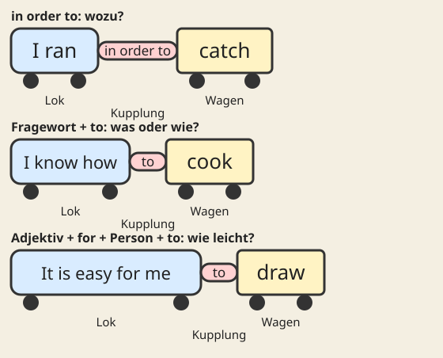

Infinitiv mit to: wozu und wie
Mit einem KI-Tutor lernen
Ein KI-Tutor erklärt dir diese Seite und hilft dir bei den Aufgaben. Wähl deinen Assistenten:
Mit Claude öffnen Mit ChatGPT öffnen Mit Mistral Vibe öffnen
Du nutzt dein eigenes Konto beim Anbieter. Der Assistent ist kein Angebot von lernapps.net: lernapps liefert nur Inhalte und Aufgaben. Die Wahl gilt für alle Seiten, nur auf diesem Gerät.
Sophies Tagebuch
Sonntagabend. Sophie schreibt in ihr Tagebuch, wie sie sich auf den Ausflug zum Schloss vorbereitet.
Das kannst du danach: Mit to + Grundform sagen, wozu du etwas tust (in order to), was du tun sollst (what to do) und wie leicht oder schwer etwas für jemanden ist (It is easy for me to …).
Aufgabe
Lösung
Amir would like to learn the guitar. richtige Antwort
Hier sitzt die Kupplung to zwischen would like und dem Wagen.
Amir would like learn the guitar.
Zwischen would like und learn fehlt die Kupplung to.
Amir would likes to learn the guitar.
Would bekommt nie ein -s.
Hinter would like sitzt die Kupplung to, und der Wagen steht in der Grundform.
Sophies Tagebuch am Sonntagabend
Sunday evening
Dear diary,
On Tuesday we are going to the castle, and I am quite nervous. Not about the castle, but about the tower. It has a lot of steps, and some of them are very steep.
| Englisch | Deutsch |
|---|---|
| nervous | nervös, aufgeregt |
| steep | steil |
Aufgabe
Lösung
Richtige Antwort: Die Aussage stimmt nicht.
Sie ist nervös wegen des Turms mit den steilen Stufen.
Mrs Parker came into my room tonight and asked, "Do you know what to wear?" I wasn't sure. She showed me where to find my old walking boots, and she gave me a small bag. "Take it to carry your lunch," she said. I am glad that I don't have to plan everything alone.
| Englisch | Beispiel · Hinweis | Deutsch |
|---|---|---|
| walking boots | Das Wort steht meist im Plural (ein Paar Wanderschuhe). | Wanderschuhe |
Aufgabe
Lösung
Wo sie ihre alten Wanderschuhe findet. richtige Antwort
Mrs Parker zeigt ihr, where to find the boots.
Welchen Weg die Klasse zum Schloss nimmt.
Vom Weg zum Schloss steht nichts im Text.
Was Sophie zum Mittagessen kochen soll.
Sie gibt Sophie nur eine Tasche für das Mittagessen.
Mrs Parker zeigt Sophie, wo die Wanderschuhe sind.
It is easy for me to talk about school or to ask for a ticket in English. But it is hard for me to say no when my friends want to go up a tall tower. Ellie says it is important for me to try it once. Perhaps she is right. I will go to the top in order to see the view, and I will hold the handrail all the time.
Now I am going to bed early in order to be fresh on Tuesday. Good night!
| Englisch | Deutsch |
|---|---|
| a view | die Aussicht |
| a handrail | das Geländer |
| fresh | hier ausgeruht, frisch |
Verstehen, belegen, meinen
Aufgabe
Lösung
Sie will am Dienstag ausgeruht sein. richtige Antwort
Sie schreibt, dass sie fresh sein will.
Sie hat Angst vor der Dunkelheit.
Von Angst im Dunkeln steht nichts im Text.
Sie muss morgen früh zum Ausflug aufbrechen.
Es ist Sonntagabend, morgen ist Montag. Der Ausflug ist erst am Dienstag, und darum will Sophie am Dienstag frisch sein.
Sophie geht früh ins Bett, damit sie am Dienstag frisch ist.
Aufgabe
Lösung
It is easy for me to talk about school or to ask for a ticket in English. richtige Antwort
Easy heißt „leicht“. Sophie nennt, was ihr leichtfällt.
But it is hard for me to say no when my friends want to go up a tall tower.
Hard heißt „schwer“. Dieser Satz sagt, was ihr schwerfällt.
Ellie says it is important for me to try it once.
Important heißt „wichtig“. Das ist Ellies Meinung, nicht Sophies Können.
Der Satz mit easy sagt, was Sophie leichtfällt.
Offene Aufgabe
Soll Sophie auf den Turm steigen, obwohl sie nervös ist? Schreibe zwei bis drei Sätze auf Deutsch oder Englisch und nenne einen Grund.
Eine gute Antwort enthält:
- Eine klare Meinung (ja oder nein). (Form)
- Ein Grund, der zu Sophies Text passt, zum Beispiel ihre Angst oder die Aussicht. Nachlesen
Lösung
Ich finde, Sophie sollte es versuchen, denn die Aussicht ist bestimmt schön und Ellie ist bei ihr. Wenn es zu schlimm ist, kann sie auch unten warten.
Die Kupplung to an drei neuen Stellen
Die Kupplung ist die Form, die die Lok vom Wagen verlangt: keine (can swim), to (would like to swim) oder später -ing. Die Kupplung to kennst du von would like. Sie sitzt noch an drei weiteren Stellen, und der Wagen dahinter bleibt immer die Grundform.
1. Nach in order: in order to heißt „um … zu“ und sagt, wozu man etwas tut: Peter saves money in order to buy a bike. Ohne in order geht es auch (to buy a bike). Ein „for to“ gibt es nicht.
2. Nach Fragewörtern: Nach what, where, how, who, which und when fragt to + Grundform nach dem, was man tun kann oder soll: Do you know how to bake a cake? Nach why steht kein to.
3. Nach einem Adjektiv: It is easy for me to … sagt, wie leicht oder schwer etwas für jemanden ist. Nach for steht die Person: It is important for Peter to sleep well.

Die rote Kupplung to kennst du von would like. Neu ist, dass sie auch nach in order, nach einem Fragewort und nach easy for me sitzt. Der Wagen dahinter ist immer die Grundform.
Quelle: eigene Zeichnung. Lizenz: CC-BY-4.0.| Lok | Kupplung | Beispiel |
|---|---|---|
| can | keine | Ellie can run fast. |
| would like | to | Ellie would like to buy a hat. |
| in order | to | Peter saves money in order to buy a bike. |
| how / what / where | to | Do you know how to bake a cake? |
| It is easy for me | to | It is important for Peter to sleep well. |
Merke
Hinter der Kupplung to steht der Wagen immer in der Grundform: in order to buy, nicht in order to buying und nicht to buys. Ein „um zu“ wird nie zu for to. Das Fragewort-Muster braucht kein eigenes Subjekt: I don't know what to say heißt „Ich weiß nicht, was ich sagen soll“. Whom ist die formelle Form von who: I don't know whom to ask ist richtig, klingt aber förmlich; im Alltag sagst du who. Und nach can oder must steht weiter keine Kupplung.
Übung
Aufgabe
Lösung
Richtige Antwort: Wir bleiben zu Hause, um den Film zu sehen. – We stay at home in order to watch the film.; Weißt du, wie man das Radio anmacht? – Do you know how to turn on the radio?; Es ist schön für Ellie, ihre Freunde zu sehen. – It is nice for Ellie to see her friends.; Ich weiß nicht, wohin ich gehen soll. – I don't know where to go.
„um … zu“ heißt in order to, ein Fragewort braucht to + Grundform, und nach for und der Person folgt to.
Aufgabe
Welche Wörter gehören in die Lücke?
Tipp
Prüfe, ob eine Kupplung fehlt und welche Form der Wagen hat: Nach in order sitzt to, nach einem Fragewort sitzt to + Grundform (kein -ing), und die Person steht nach for, nicht nach to oder of.
- Ich gehe früh ins Bett, um fit zu sein. → I go to bed early … be fit.
- Kannst du mir zeigen, wie man den Computer startet? → Can you show me how … the computer?
- Für Peter ist es langweilig, auf den Bus zu warten. → It is boring … to wait for the bus.
- Mr Hill sagt uns, was wir lesen sollen. → Mr Hill tells us what ….
Lösung
- I go to bed early in order to be fit.
- Can you show me how to start the computer?
- It is boring for Peter to wait for the bus.
- Mr Hill tells us what to read.
Aufgabe
Lösung
Richtige Antwort: 1. Amir, 2. studies, 3. in, 4. order, 5. to, 6. pass, 7. the, 8. test.
Erst die Lok, dann in order und die Kupplung to, zuletzt der Wagen pass.
Aufgabe
Schreibe den Satz auf Englisch.
- Ich lese viel, um neue Wörter zu lernen.
- Ich weiß nicht, wen ich fragen soll.
- Für Amir ist es leicht, neue Freunde zu finden.
Lösung
- I read a lot in order to learn new words. (auch richtig: I read a lot to learn new words.)
- I don't know who to ask. (auch richtig: I don't know who I should ask.; I don't know whom to ask.; I don't know whom I should ask.; I do not know who to ask.; I do not know who I should ask.; I do not know whom to ask.; I do not know whom I should ask.)
- It is easy for Amir to find new friends. (auch richtig: It is easy for Amir to make new friends.; It's easy for Amir to find new friends.; It's easy for Amir to make new friends.)
Aufgabe
Hör zu und schreibe, was du hörst.
- KI
- KI
- KI
Lösung
- We went to the shop to buy some milk.
- Can you tell me where to put these books?
- It is not difficult for us to find the way. (auch richtig: It's not difficult for us to find the way.)
Selbst sagen und schreiben
Aufgabe
Hör zu, sprich nach und nimm dich auf. Vergleiche dann mit dem Original.
Tipp
Hör zuerst zu, sprich dann nach und vergleiche.
- He opened the window to let in some fresh air.KI
- Nobody told us when to start.KI
- It is good for children to play outside.KI
Zum Aufnehmen braucht diese Aufgabe JavaScript. Die Beispiele kannst du auch ohne anhören.
Lösung
- He opened the window to let in some fresh air.
- Nobody told us when to start.
- It is good for children to play outside.
Offene Aufgabe
Du schreibst Sophie eine Nachricht über deinen nächsten Schultag oder Ausflug. Schreibe drei kurze englische Sätze: einen mit in order to, einen mit what, where oder how und to, und einen mit It is easy oder It is hard for me to …
Eine gute Antwort enthält:
Lösung
I get up early in order to catch the bus. I don't know what to wear. It is hard for me to wake up before seven.
Wie es weitergeht
Auf der nächsten Seite liest du einen Chat über Hobbys und lernst eine zweite Kupplung kennen, die -ing heißt.
Fehler gefunden oder eine Idee für diese App?